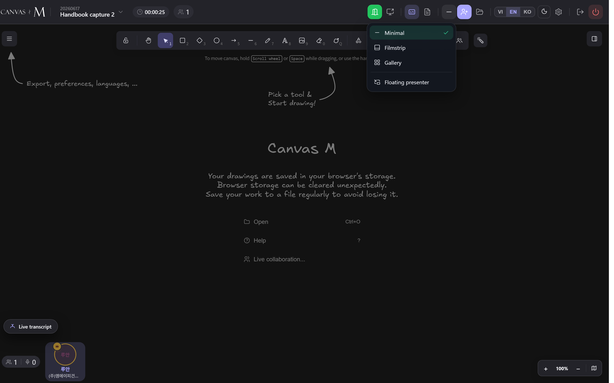

Video layouts
Canvas M lets you choose how everyone's camera tiles sit around your shared canvas. Pick a quiet strip, a docked rail, or a full-screen grid — and pin the one face you want to keep watching. This chapter walks every surface, every toggle, and the gentle rules behind who lands centre stage.
One canvas, three surfaces
Your meeting always has a video surface — the way camera tiles are arranged around the drawing canvas. Canvas M ships three: Minimal, Filmstrip, and Gallery. They are mutually exclusive: you are always in exactly one.
The choice is yours alone. It is a per-user preference, not synced to the room, so switching layouts changes only your screen — never anyone else's. The same tiles power every surface: each person shows their live camera when it is on, or their avatar when it is off, with a name label and a muted badge. Switching surfaces never rebuilds presence; it only re-arranges the same faces.
Your layout is yours. Switching never touches anyone else's screen.
Your chosen layout is remembered across reloads (saved locally on this device). A new device or browser starts back at Minimal.
Switch your video layout
- Find the Video layout button in the meeting header — the small icon whose glyph changes to match your current surface.
- Click it to open the popover menu.
- Pick a surface: Minimal, Filmstrip, or Gallery. A check mark sits beside the one in use.
- The menu closes and your canvas re-arranges instantly.
→ Your video surface changes for you only. The header button's icon updates to reflect the new mode.
Below the three surfaces sits a separator and a fourth row — Floating presenter — covered later in this chapter. It is an overlay, not a surface, so it has its own check mark you can turn on or off independently.

Minimal, Filmstrip, Gallery
Just the avatar strip along the bottom. The canvas stays as large as possible — the default, and the choice when drawing is the point.
A full-width rail of camera tiles docked to the bottom (~140px tall). The canvas is pushed up, not covered, so it stays clean and usable above the faces.
A full-screen grid of everyone's camera, like Zoom or Meet. Opens over the canvas as a dialog; close it to return.
Reach for Minimal while you sketch, Filmstrip when you want faces visible without leaving the canvas, and Gallery for a faces-first moment — a round of intros, a vote, a discussion where the drawing waits.
- 1 Title bar — reads Meeting followed by a count of how many people are shown (e.g. Meeting · 6).
- 2 Grid / Speaker sub-mode toggle. Grid tiles everyone equally; Speaker promotes one face to a big stage with the rest in a rail below.
- 3 Close button (✕ Close), top-right — exits the gallery and drops you back to the Minimal strip.
- 4 A camera tile — live video, or the avatar when the camera is off. A green ring marks whoever is speaking.
- 5 Tile label — the person's name, a (You) tag on your own tile, a Host badge for the host, and a 🔇 icon when they are muted.
- 6 Pin affordance — a quiet pin glyph on the auto-focused tile, or an Unpin chip on a tile you pinned yourself.
Focus and pinning
Across Filmstrip, the Gallery speaker stage, and the floating window, Canvas M always highlights one focused person — the presenter of the moment. You never have to set this; it resolves automatically, and you can override it with a pin.
The focus follows a strict order of precedence, highest wins: your pin → the person sharing their screen → the active speaker → the host → the first tile. So if nobody is pinned or sharing, the focus simply follows whoever is talking. To pin, click any tile (in the gallery or filmstrip) — it is promoted to focus and shows an Unpin chip. Click it again, or pin someone else, to release it. Pins are local and ephemeral: they affect only your view and clear on reload. If the person you pinned leaves the room, the focus quietly falls back down the chain.
Pin = your pick. Screen-share, then speaker, then host fill in when you haven't pinned anyone.
Pinning is per-viewer — there is no way to force a focus for the whole room from here. Each person chooses their own pin. Host moderation (mute, remove, admit) lives in the Participants panel, not in the video layout controls.
The floating presenter window
- Open the Video layout popover and turn on Floating presenter (the row below the three surfaces).
- A small picture-in-picture card appears over the canvas, showing the focused person's camera (or avatar) with their name.
- Drag the card by its header to move it — on release it snaps to the nearest corner, and that corner is remembered.
- Click Minimise to shrink it to a small circular puck; click the puck to bring the card back.
- Click Hide (×) to dismiss it entirely.
→ You keep watching the presenter in a corner while the canvas stays fully usable. The window shows the same focused person every other surface agrees on.
The floating window only ever shows someone else — never your own face — and it is hidden automatically in Gallery mode, where everyone is already full-screen. The minimise tooltip reads Reopen presenter window on the puck.
Every layout control
| Control | Where | What it does |
|---|---|---|
| Video layout (header button) | Meeting header | Opens the surface popover; its icon mirrors your current surface. |
| Minimal | Layout popover | Avatar strip only — canvas stays maximal. The default. |
| Filmstrip | Layout popover | Bottom rail of camera tiles that pushes the canvas up (~140px). |
| Gallery | Layout popover | Full-screen grid of everyone's cameras. |
| Floating presenter | Layout popover (toggle) | PiP of the focused person over the canvas; off by default. |
| Grid | Gallery title bar | Tiles everyone equally inside the gallery. |
| Speaker | Gallery title bar | One big focused tile, the rest in a rail below. |
| Click a tile | Filmstrip / Gallery | Pin that person as focus; click again to Unpin. |
| ✕ Close | Gallery title bar | Exits the gallery back to the Minimal strip. |
Surface (Minimal/Filmstrip/Gallery) and the Grid/Speaker sub-mode are both per-user preferences and both survive a reload. Pins and the Floating-presenter toggle are per-session and clear on reload.
None of these controls are host-gated — every participant has the full set. They change only your own view.
Video layout gotchas
A tile shows an avatar, not video — That person's camera is off (or hasn't started). Tiles only show live video while a camera is actually publishing.
Nothing to fix — it's expected. Their face appears the moment they turn the camera on. → 4.4
My own tile looks mirrored — Self-view is mirrored on purpose — a front camera reads more naturally that way.
This is intended and affects only your local view; others see you un-mirrored. → 4.5
The face I pinned jumped to someone else — The pinned person left the room, so focus fell back down the chain (screen-share › speaker › host › first).
Click the tile of the person you want and pin them again. → 4.6
Floating presenter won't appear — It is hidden in Gallery mode by design, and it never shows your own face when you're the only person.
Switch to Minimal or Filmstrip, and make sure another participant is present. → 4.7
My layout reset to Minimal on a new device — The preference is saved per-device; a different browser or machine has no saved choice.
Re-pick your surface from the Video layout popover — it'll stick on that device. → 4.1
The green ring keeps moving between tiles — The ring marks the active speaker, which naturally shifts as people talk.
Pin the person you want fixed in focus to stop the ring driving the stage. → 4.6
A camera tile never goes black on a stream error — if a video track fails to attach, the tile quietly falls back to the avatar instead.